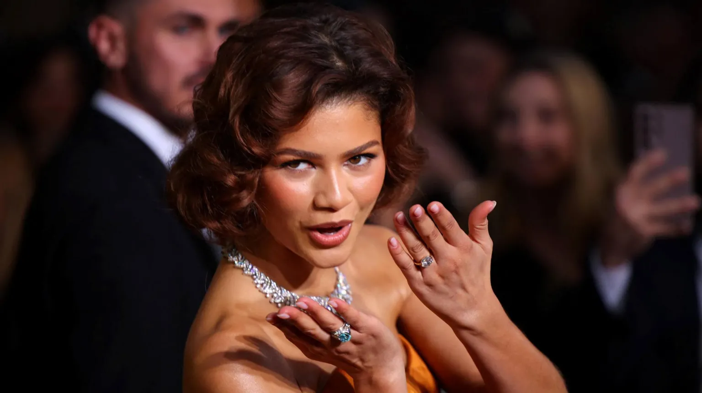

6 January 2025
Entertainment reporter •@YasminRufo
Zendaya was sporting a diamond ring on her engagement ring finger
The Golden Globes were a night to celebrate film, TV, and... love.
Last year, Timotheé Chalamet sent the internet into a frenzy as he piled on the PDA with his girlfriend Kylie Jenner at the ceremony, and this year it was date night again as the pair cosied up throughout the evening.
There was even more love in the air as A Different Man star Sebastian Stan is now officially officially dating Annabelle Wallis. He shouted out that he loved her during his acceptance speech for best actor in a musical or comedy film.
And if that isn't enough romance for you then Zendaya has stolen the show with rumours of a potential engagement. Here's more on that and eight other highlights from the awards ceremony that you may have missed.
Zendaya has been dating Spiderman actor Tom Holland since 2021
Zendaya brought her usual effortlessly sleek style to the red carpet but the internet seemed less interested in her burnt orange gown and more about what was on her finger.
The Challengers star was sporting a large diamond ring on the fourth finger of her left hand and some thought it might be a sign that she's engaged.
The 28-year-old has been dating Spider-Man actor Tom Holland for the past four years.
Fans immediately started speculating about their possible engagement, but one pointed out on X:"They're very protective about their relationship, so would she actually wear the ring on the red carpet?"
Nikki Glaser managed to change into 10 different outfits throughout the evening
If you're hosting the Golden Globes, naturally you've got to look the part. For Nikki Glaser that meant a whopping a 10 dresses across the three hour ceremony.
The comedian started off the night wearing a strapless metallic dress on the red carpet before switching to a halter neck silver sequined gown to kick the ceremony off.
Nikki Glaser's best jokes at the Golden Globes
The 40-year-old seemed to use every advert break across the show to switch into something different backstage and some of her other outfits included a sparkly purple dress, a high-slit red gown and a tight-fitting black plunge number.
Our personal favourite outfit? A Wicked-inspired bright pink sequined dress that she wore with a pope's hat as she sang "you're going to be pope-ular".